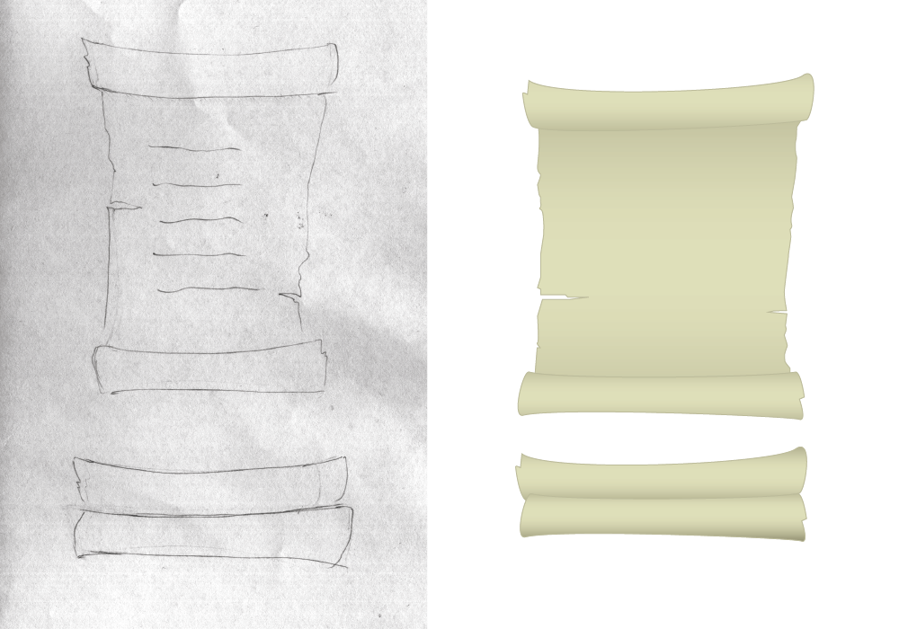
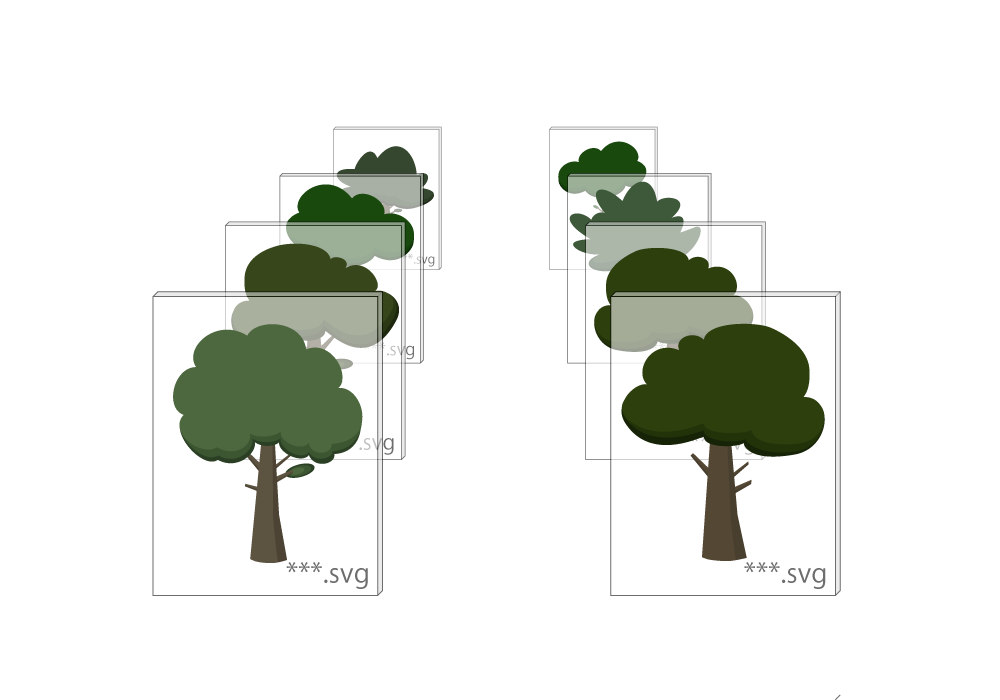

The environment design started off with some research into various games and their environments. After browsing many different styles, we settled on a semi-flat whimsical style for both the environment and characters. From there on, the first tree was sketched, the Bunnytime environment style was established, and we were off!
The scroll was one of our first ideas for art assets. We thought it would be fun and engaging if users could “interact” with the story. So to convey the kidnapping of our character’s grandpa, we utilized the live scrolling parchment on our story page.
I wanted to create characters that would be appealing to everyone. The main design choice for our monster illustrations is an in between of aggressive, yet still cute. The design of our main character, the bunny, was inspired by the Adventure Times main character, Finn. I chose not to use a human character because since we're in a forest, we usually find rabbits in the forrest, and so our main character became a hybrid between a rabbit and a person.
With the help of Sass and Compass, the web development is faster than expected. For the HTML and CSS, the most challenging part is to make the responsive navigation bar (hamburger menu for mobile version) and make the scroll looks good at every screen size.
Concept
1. Pick random trees
2. Place them in as a layer randomly
3. Place them in as a layer randomly